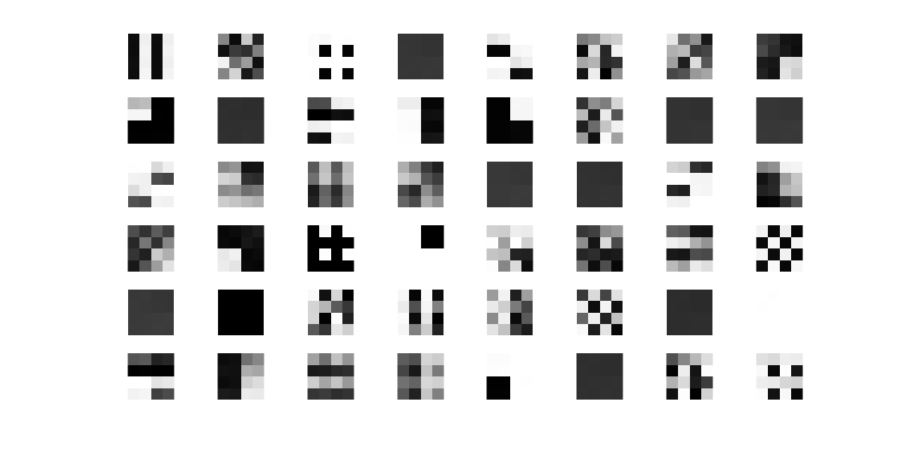
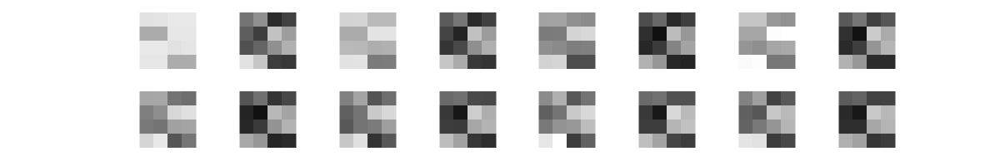
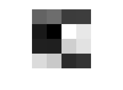
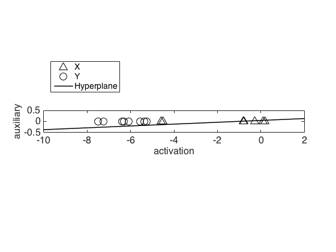
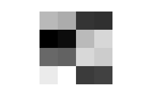
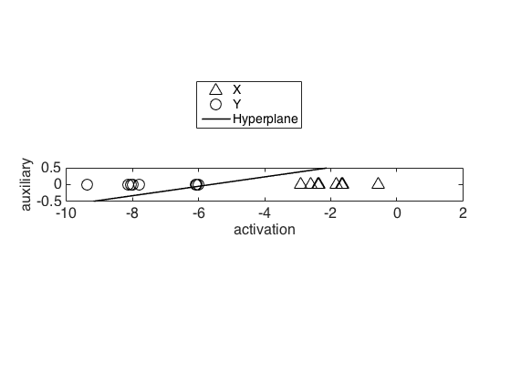

This is the readme for the models associated with the paper: Raudies F, Zilli EA, Hasselmo ME (2014) Deep belief networks learn context dependent behavior. PLoS One 9:e93250 This code was contributed by Florian Raudies. Note that the code is also available at the journal web site http://journals.plos.org/plosone/article?id=10.1371/journal.pone.0093250#s5 This directory contains Matlab (R) code to replicate the figures and simulations from the paper. Note the approximate length of time that it takes the scripts to run is included in the comments at the top of the scripts as revealed by this grep command: $ grep min Fig*.m | grep about | grep \% Figure2.m:% This script will run for about 2 minutes. Figure3A.m:% This script will run for about 45 minutes. Figure3B.m:% This script will run for about 620 minutes or 10 hours. Figure3C.m:% This script will run for about 50 minutes. Figure3D.m:% This script will run for about 40 minutes. Figure3E.m:% This script will run for about 500 minutes or 8 hours. Figure3F.m:% This script will run for about 45 minutes. Figure3G.m:% This script will run for about 35 minutes. Figure3H.m:% This script will run for about 35 minutes. Figure4B.m:% This script will run for about 80 minutes. Figure4C.m:% This script will run for about 1,100 minutes or 16 hours. Figure4D.m:% This script will run for about 40 minutes. $ Entering Figure2 on the matlab command prompt for example generates the following figures:  Figure 2B  Figure 2C  Figure 2D  Figure 2E  Figure 2F  Figure 2G Please report problems, bugs, or suggestions to fraudies__at__bu__dot__edu (Replace __at__ by @ and __dot__ by .). If you use any of the methods or code, please cite our article: Raudies F, Zilli EA, Hasselmo ME (2014) Deep belief networks learn context dependent behavior. PLoS One 9:e93250 Copyright (C) 2014 Florian Raudies, Boston University. This program is free software: you can redistribute it and/or modify it under the terms of the GNU General Public License as published by the Free Software Foundation, either version 3 of the License. This program is distributed in the hope that it will be useful, but WITHOUT ANY WARRANTY; without even the implied warranty of MERCHANTABILITY or FITNESS FOR A PARTICULAR PURPOSE. See the GNU General Public License for more details. You should have received a copy of the GNU General Public License along with this program. If not, see http://www.gnu.org/licenses/.